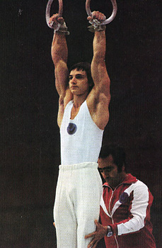

Eduard Azaryan (USSR)
1978 World Cup AA Bronze Medalist
1980 World Cup AA Silver Medalist

Eduard was born on December 1, 1959 in Yerevan and was coached by Vartkes Arakelyan. His father is Albert Azaryan, a famous gymnast from the 1950s and early 1960s. In 1992, Eduard and his family moved to the USA. He and his wife, Marina, own and operate Azarian Gymnastics in Aliso Viejo, CA.
Competition Results
1975
Jr. CSSR-USSR Dual Meet: 1st Team, 1st AA
Jr. Poland-Armenia Dual Meet: 2nd Team, 1st AA
Jr. USSR Championships: 4th AA, 1st R, 2nd FX, 2nd HB
USSR-CSSR Dual Meet: 1st Team, 1st AA
1976
Jr. Friendship Tournament (Druzhba): 1st Team, 5th AA, 2nd PB, 3rd R
USSR Schoolchildren's Spartakiade: 1st AA
1977
GDR-USSR Dual Meet: 1st Team, 1st AA
USSR Cup: 8th AA, 3rd R
Werweld Turn Top: 6th AA, 2nd PB
1978
FRA-USSR-BUL: 1st Team, 5th AA
USSR Championships: 2nd AA
USSR Cup: 5th AA
World Championships: 2nd Team, 19th AA
World Cup: 3rd AA, 3rd R, 6th FX, 6th V, 7th PH
1979
USSR Championships: 1st AA, 1st FX, 2nd R, 3rd PH, 4th V, 5th PB, 6th HB
USSR Spartakiade: 1st AA, 1st FX, 2nd R, 3rd PB
World Cup: 10th AA, 2nd R, 4th PB, 6th HB, 8th PH
1980
Olympics: 1st Team, 4th AA (prelims)
USSR Championships: 4th AA, 1st V, 5th PH
USSR Cup: 2nd AA
World Cup: 2nd AA, 4th PH, 4th PB, 4th HB, 6th R
1981
USSR Championships: 10th AA
USSR Cup: 3rd AA
This page was created on December
17, 2000 and was last updated on February 24, 2021.
© Gymn Forum